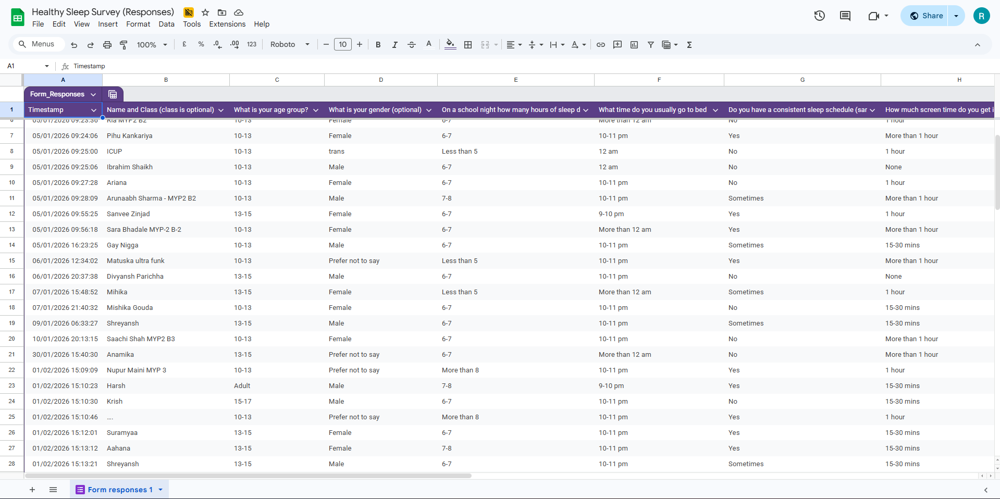

Understanding the Problem and Planning the Project
Our group chose the topic of sleep because it is something that directly affects all of us in our daily lives. Many of us have experiences feeling sleep deprived and what it does to us in the day. A few of our group members are also athletes, and lack of sleep affects their game performance drastically. Because of this personal connection, we became interested in learning more about how sleep impacts our health, concentration, and overall well-being.
Scientific and technical innovation is the global context that connects with our topic strongly because understanding sleep is based on scientific research about how the brain and body functions based on sleep. This is scientific research and biology that supports our work. The new studies and technologies such as sleep tracking apps are innovations that help us understand what harm sleep quality. By using this global context, our project is focusing on how scientific knowledge and technical innovation help understand sleep better to make better choices and inform our community about them.
Our community needs this project because many people, including teenagers and students, often underestimate the importance of getting healthy. Busy schedules, academic pressure and increased screen time have all led to unhealthy sleep habits. We realised that many of these people might be in our community. As a result of this, our community’s people might face fatigue, reduced focus and stress in their daily lives.
Because of this we created a survey, asking our community about their sleep habits. The responses of this survey show that most people in our community are getting less sleep and their habits before bed are unhealthy, causing the quality of the sleep to be bad. This shows that people do need awareness about this topic in our community.
The goal of our community project was to raise awareness about getting healthy sleep. We planned to achieve this goal by conducting research, creating an informative presentation and organizing meaningful activities to ensure that our teachings were meaningful.
Our goal was specific because it focused on educating students about sleep habits. It was a measurable goal because we collected responses through a survey and observed participation during our presentation. The goal was also achievable since we had enough time and resources to make the presentation and reach our community. This goal was relevant because sleep directly affects a person’s health and spreading awareness about such a topic would help take care of the community’s well-being. Finally, it was time-bound as the project was planned and executed within a period of 3 months.

We understood that our community might be getting unhealthy sleep and getting less sleep, so to conduct research and conduct primary research, we created a survey asking our community about their sleep habits. Here are some results that we got. Through these results we understood what points to stress on and to what extent our community needs awareness.